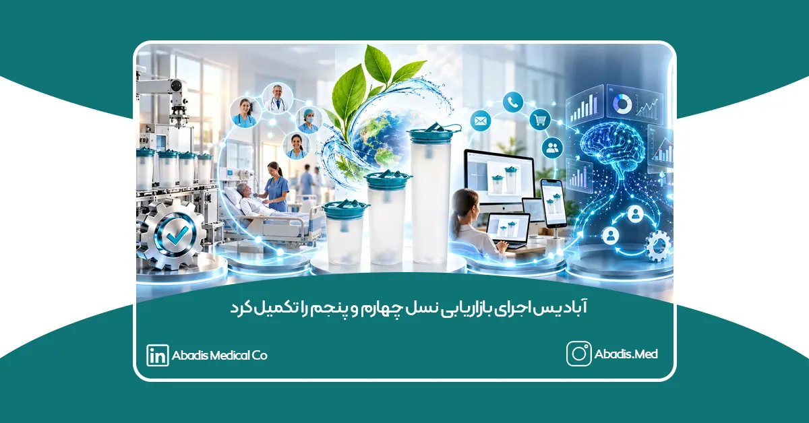
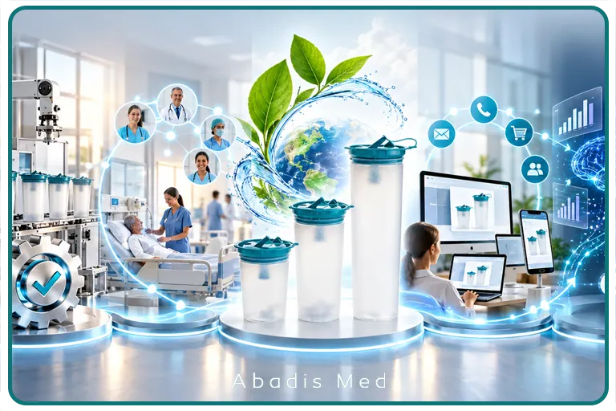

از تولید محصول تا شکلگیری یک سازمان هوشمند، دادهمحور و یادگیرنده
بهمن ۱۴۰۴
شرکت دانشبنیان مخازن طبی آبادیس، در ادامه برنامه تحول دیجیتال خود، از تکمیل زیرساختها و فرایندهای بازاریابی نسل چهارم و پنجم بر اساس چارچوبهای مطرحشده توسط فیلیپ کاتلر خبر داد.
در این مرحله، اطلاعات حاصل از فروش، ارتباط با مشتریان، عملکرد نمایندگان، خدمات پس از فروش، شکایات، PMCF، وضعیت بازار و شاخصهای مالی و تولیدی، در یک چرخه یکپارچه جمعآوری و تحلیل میشوند. این دادهها علاوه بر پشتیبانی از تصمیمهای مدیریتی، برای پیشبینی رفتار مشتریان، خودکارسازی فرایندها و یادگیری مستمر سازمان مورد استفاده قرار میگیرند.
این تحول، نتیجه مسیری تدریجی است که آبادیس از زمان تأسیس در سال ۱۳۹۶ آغاز کرده و طی آن، از یک شرکت محصولمحور به سازمانی مشتریمحور، ارزشآفرین، دیجیتال و هوشمند در بهمن سال ۱۴۰۴ تبدیل شده است.
نسل اول؛ تمرکز بر محصول، کیفیت و ایجاد ظرفیت تولید
نخستین مرحله توسعه آبادیس با تمرکز بر بازاریابی نسل اول و تولید یک محصول ایمن، باکیفیت و موردنیاز مراکز درمانی آغاز شد.
در این دوره، اولویت اصلی آبادیس طراحی، تولید و تجاریسازی کیسه ساکشن یکبارمصرف و ایجاد زیرساخت صنعتی لازم برای تأمین پایدار نیاز بیمارستانها بود. توسعه دانش فنی، انتخاب مواد اولیه مناسب، طراحی قالبها، استقرار کنترل کیفیت، افزایش ظرفیت تولید و دستیابی به استانداردهای موردنیاز صنعت تجهیزات پزشکی، مهمترین اقدامات آبادیس در این مرحله بودند.
هدف اصلی در نسل اول، ارائه محصولی مطمئن و استاندارد بود که بتواند جایگزین روشهای سنتی جمعآوری سیالات بیمارستانی شود و ضمن ارتقای ایمنی، وابستگی مراکز درمانی به محصولات وارداتی را کاهش دهد.
نسل دوم؛ حرکت از محصولمحوری به مشتریمحوری
با توسعه بازار و افزایش تعداد مصرفکنندگان، آبادیس وارد مرحله دوم بازاریابی شد؛ مرحلهای که در آن، شناخت نیازهای بیمارستانها و طراحی راهکار متناسب با شرایط هر مرکز درمانی اهمیت بیشتری پیدا کرد.
توسعه کیسههای ساکشن در ظرفیتها و مدلهای مختلف، ارائه مخازن، پایهها، اتصالات و تجهیزات جانبی، گسترش شبکه نمایندگان، ارتباط مستمر با مسئولان تجهیزات پزشکی و واحدهای کنترل عفونت و همچنین تقویت خدمات پس از فروش، بخشی از اقدامات آبادیس در این دوره بود.
در این مرحله، مشتری دیگر صرفاً خریدار یک محصول نبود؛ بلکه بهعنوان یکی از منابع اصلی شناخت بازار و توسعه محصول در نظر گرفته شد. اطلاعات مربوط به نوع مصرف، ظرفیت موردنیاز، شرایط نصب، نحوه استفاده، مشکلات احتمالی و انتظارات مراکز درمانی، بهتدریج وارد فرایندهای تصمیمگیری شرکت شدند.
این رویکرد، زمینه را برای ایجاد ارتباط بلندمدت با بیمارستانها، نمایندگان و سایر ذینفعان زنجیره سلامت فراهم کرد.
نسل سوم؛ پیوند بازاریابی با ارزشهای انسانی و توسعه پایدار
در بازاریابی نسل سوم، هدف سازمان از فروش محصول فراتر میرود و برند تلاش میکند در حل مسائل انسانی، اجتماعی و زیستمحیطی نقش مؤثری ایفا کند.
آبادیس در این مرحله، مأموریت خود را بر سه محور اصلی تعریف کرد:
- کمک به کنترل عفونتهای بیمارستانی؛
- مدیریت ایمنتر سیالات و پسماندهای عفونی؛
- کاهش مصرف آب، مواد شوینده، انرژی و منابع انسانی در مراکز درمانی.
استفاده از کیسه ساکشن یکبارمصرف، علاوه بر افزایش ایمنی کارکنان و بیماران، میتواند تعداد دفعات شستوشو و ضدعفونی مخازن را کاهش دهد و به مدیریت بهتر پسماندهای مایع و عفونی کمک کند.
در این دوره، توسعه پایدار، مسئولیت اجتماعی، سلامت جامعه و حفاظت از محیطزیست به بخشی از هویت برند آبادیس تبدیل شدند. بهاینترتیب، آبادیس از جایگاه یک تولیدکننده تجهیزات پزشکی فراتر رفت و خود را بهعنوان مجموعهای مسئول در برابر بیمارستان، جامعه و محیطزیست تعریف کرد.
نسل چهارم؛ یکپارچهسازی بازاریابی سنتی و دیجیتال
آبادیس از سال ۱۳۹۸ با راهاندازی زیرساخت هوش تجاری یا BI، نخستین گام جدی خود را برای تبدیلشدن به یک سازمان دادهمحور برداشت.
در ادامه این مسیر، اطلاعات فروش، مالی، تولید، وصول مطالبات، عملکرد نمایندگان، وضعیت مشتریان و تحولات بازار در قالب داشبوردهای مدیریتی یکپارچه شدند. این زیرساخت به مدیران کمک کرد تا بهجای اتکا به گزارشهای پراکنده یا قضاوتهای فردی، تصمیمهای خود را بر اساس دادههای واقعی و قابلاندازهگیری اتخاذ کنند.
با تکمیل بازاریابی نسل چهارم، ارتباطات حضوری و سنتی آبادیس با ابزارها و کانالهای دیجیتال پیوند خوردند. CRM، سامانههای ارتباط با مشتری، وبسایت، محتوای آموزشی، پیامک، تماس تلفنی، شبکه نمایندگان، نیروهای فروش و خدمات پس از فروش، به اجزای یک مسیر واحد برای مشتری تبدیل شدند.
در این ساختار، تعامل مشتری میتواند از یک تماس، ملاقات حضوری، پیام یا بازدید از وبسایت آغاز شود و بدون گسست در CRM ثبت و پیگیری شود. سوابق خرید، درخواستها، شکایات، وضعیت وصول، خدمات ارائهشده و نتایج ارتباطات قبلی نیز در تصمیمهای بعدی مورد استفاده قرار میگیرند.
هدف آبادیس در نسل چهارم، صرفاً دیجیتالیکردن تبلیغات نبود؛ بلکه ایجاد یک تجربه منسجم در تمام نقاط تماس مشتری با شرکت بود. به همین دلیل، فرایند بازاریابی از یک فعالیت مستقل به شبکهای متصل از فروش، خدمات، تولید، مالی، کنترل کیفیت و مدیریت تبدیل شد.
نسل پنجم؛ هوش مصنوعی و فناوری در خدمت انسان
در بازاریابی نسل پنجم، فناوری، هوش مصنوعی و تحلیل داده برای شناخت بهتر نیازهای انسان و ارائه تجربهای دقیقتر، سریعتر و ارزشمندتر به کار گرفته میشوند.
آبادیس با تکمیل چند زیرساخت کلیدی، اجرای این نسل از بازاریابی را در بهمن ۱۴۰۴ عملیاتی کرده است.
اجرای کامل PMCF و تکمیل حلقه بازخورد پس از عرضه
یکی از ارکان اصلی این مرحله، اجرای کامل فرایند پیگیری بالینی پس از عرضه محصول یا PMCF است.
در این فرایند، اطلاعات مرتبط با عملکرد محصول پس از ورود به بازار، نحوه استفاده در مراکز درمانی، بازخورد کاربران، شکایات، موارد عدم انطباق، رضایت مشتریان و فرصتهای بهبود بهصورت ساختاریافته جمعآوری و تحلیل میشوند.
اتصال PMCF به سیستمهای CRM و BI موجب شده است که بازخورد بازار صرفاً در قالب یک گزارش باقی نماند؛ بلکه مستقیماً در اصلاح محصول، آموزش کاربران، کنترل کیفیت، طراحی خدمات و تصمیمهای بازاریابی مورد استفاده قرار گیرد.
بهاینترتیب، چرخهای مستمر میان محصول، مشتری، بازار، واحد کیفیت و مدیریت شکل گرفته است.
تحلیل RFM و شناخت دقیقتر رفتار مشتریان
آبادیس با استفاده از تحلیل RFM، مشتریان خود را بر اساس سه شاخص اصلی بررسی میکند:
- آخرین زمان خرید؛
- تعداد و تکرار خرید؛
- ارزش ریالی خرید.
نتایج RFM در کنار اطلاعاتی مانند سودآوری، میزان تخفیف، هزینه خدمترسانی، خواب مطالبات، ظرفیت مرکز، وضعیت رقبا و پتانسیل رشد مشتری قرار میگیرد تا تصویری دقیقتر از ارزش و رفتار هر مشتری ایجاد شود.
این مدل به آبادیس امکان میدهد تغییر رفتار مشتریان را زودتر شناسایی کند؛ برای مثال، کاهش تدریجی خرید، افزایش فاصله سفارشها، تغییر الگوی پرداخت یا کاهش تعاملات میتواند پیش از ازدسترفتن مشتری شناسایی شود.
پیشبینی رفتار مشتریان با استفاده از تحلیل داده
در نسل پنجم، دادههای گذشته تنها برای گزارش عملکرد استفاده نمیشوند؛ بلکه مبنایی برای پیشبینی آینده هستند.
آبادیس با تحلیل روندهای خرید، الگوی سفارشگذاری، مصرف مراکز درمانی، وضعیت وصول، تغییرات فصلی و رفتار مشتریان، میتواند موارد زیر را پیشبینی کند:
- احتمال خرید مجدد مشتری؛
- زمان احتمالی سفارش بعدی؛
- میزان تقریبی تقاضا؛
- احتمال کاهش خرید یا ریزش مشتری؛
- احتمال تأخیر در پرداخت؛
- ظرفیت توسعه فروش در هر مرکز یا استان؛
- محصول مناسب برای پیشنهاد به هر گروه از مشتریان؛
- تغییرات احتمالی تقاضای بازار.
این پیشبینیها به تیمهای فروش، تولید، مالی و لجستیک کمک میکنند تا پیش از وقوع رویدادها، اقدامات مناسب را برنامهریزی کنند.
استفاده از هوش مصنوعی در تحلیل و تصمیمسازی
هوش مصنوعی در آبادیس بهعنوان ابزاری برای جایگزینی ارتباط انسانی در نظر گرفته نشده است؛ بلکه وظیفه آن افزایش دقت، سرعت و کیفیت تصمیمهای انسانی است.
از هوش مصنوعی میتوان برای شناسایی الگوهای پنهان در دادهها، تحلیل بازخورد مشتریان، دستهبندی درخواستها و شکایات، پیشنهاد اقدام بعدی، پیشبینی تقاضا، تولید محتوای متناسب با هر مخاطب و ارزیابی نتایج فعالیتهای بازاریابی استفاده کرد.
در این ساختار، کارشناسان و مدیران همچنان مسئول تصمیم نهایی هستند؛ اما تصمیمهای آنان با دسترسی به تحلیلهای جامعتر و پیشنهادهای هوشمندانه پشتیبانی میشوند.
اجرای خودکار فرایندها از طریق واسطهای نرمافزاری
یکی دیگر از ویژگیهای بازاریابی نسل پنجم در آبادیس، اتصال سامانههای مختلف از طریق واسطهای نرمافزاری و ایجاد جریانهای کاری خودکار است.
در این ساختار، وقوع یک رویداد میتواند مجموعهای از اقدامات مرتبط را بهصورت خودکار فعال کند. برای مثال:
- کاهش خرید یک مشتری میتواند باعث ایجاد هشدار برای کارشناس فروش شود؛
- نزدیکشدن زمان سفارش بعدی میتواند یک وظیفه پیگیری در CRM ایجاد کند؛
- ثبت شکایت میتواند فرایند بررسی کیفیت و خدمات پس از فروش را فعال کند؛
- تغییر وضعیت مطالبات میتواند بر شرایط فروش و اولویت پیگیری اثر بگذارد؛
- دریافت بازخورد PMCF میتواند به واحدهای کیفیت، تحقیقوتوسعه و آموزش منتقل شود؛
- تغییر موجودی یا پیشبینی تقاضا میتواند در برنامهریزی تولید و خرید مواد اولیه مورد استفاده قرار گیرد.
این خودکارسازی، ضمن کاهش فعالیتهای تکراری، احتمال فراموششدن پیگیریها را کاهش میدهد و سرعت پاسخگویی سازمان را افزایش میدهد.
شکلگیری یک سازمان یادگیرنده
مهمترین دستاورد نسل پنجم برای آبادیس، ایجاد یادگیری سیستماتیک است.
در این مدل، هر اقدام بازاریابی، فروش یا خدماتی بهعنوان یک تجربه قابلاندازهگیری ثبت میشود. سیستم بررسی میکند که کدام اقدام، برای کدام مشتری، در چه زمانی و با چه نتیجهای همراه بوده است.
نتایج موفق و ناموفق هر اقدام در تصمیمهای بعدی به کار گرفته میشوند و مدلهای تحلیلی بهتدریج دقیقتر میشوند. بنابراین، سازمان تنها داده جمعآوری نمیکند؛ بلکه از نتایج اقدامات خود میآموزد.
چرخه اصلی این نظام عبارت است از:
جمعآوری داده ← تحلیل و پیشبینی ← پیشنهاد اقدام ← اجرای خودکار یا انسانی ← سنجش نتیجه ← یادگیری و اصلاح
این چرخه، آبادیس را از یک شرکت دارای داشبورد و گزارش، به یک سازمان هوشمند و یادگیرنده تبدیل میکند.
آغاز برنامه بازاریابی نسل ششم تا دهمین سال تأسیس آبادیس
همزمان با تکمیل نسل چهارم و پنجم، آبادیس برنامه ورود به بازاریابی نسل ششم را برای بازه زمانی سالهای ۱۴۰۴ تا ۱۴۰۶ آغاز کرده است.
سال ۱۴۰۶، دهمین سال فعالیت آبادیس خواهد بود و این شرکت قصد دارد تا آن زمان، تجربه فیزیکی و دیجیتال مشتریان را بیش از گذشته به یکدیگر متصل کند.
بازاریابی نسل ششم بر ایجاد تجربههای فراگیر و پیوند فضای فیزیکی و دیجیتال تمرکز دارد. در این رویکرد، مشتری نباید میان ارتباط حضوری، آموزش، خرید، نصب، خدمات و ابزارهای دیجیتال احساس گسست کند.
مهمترین محورهای برنامه آبادیس برای ورود به نسل ششم عبارتاند از:
- طراحی نمایش سهبعدی و تعاملی محصولات؛
- ارائه آموزشهای تصویری و واقعیت افزوده برای نصب و استفاده صحیح؛
- ایجاد تور مجازی کارخانه و فرایندهای کنترل کیفیت؛
- توسعه شبیهسازهای محاسبه صرفهجویی اقتصادی، مصرف آب و پسماند بیمارستانی؛
- طراحی پرتال اختصاصی برای بیمارستانها و نمایندگان؛
- ارائه تجربه شخصیسازیشده بر اساس نوع مرکز، میزان مصرف و سابقه همکاری؛
- یکپارچهسازی بازدید حضوری، تماس، آموزش، سفارشگذاری و خدمات پس از فروش؛
- استفاده از محیطهای تعاملی برای معرفی محصولات در بازارهای صادراتی؛
- توسعه محتوای چندزبانه برای مشتریان و نمایندگان بینالمللی؛
- ایجاد تجربهای منسجم از برند آبادیس در تمام نقاط تماس فیزیکی و دیجیتال.
اجرای این برنامه بهصورت مرحلهای انجام خواهد شد. زیرساختها و محتوای پایه در سال ۱۴۰۴ توسعه مییابند، طرحهای آزمایشی در سال ۱۴۰۵ با مشارکت تعدادی از مراکز درمانی و نمایندگان اجرا میشوند و نسخه یکپارچه تجربه نسل ششم تا سال ۱۴۰۶ و همزمان با دهمین سال تأسیس آبادیس شکل خواهد گرفت.
حرکت از تولیدکننده تجهیزات پزشکی به سازمان هوشمند سلامت
مسیر توسعه آبادیس از نسل اول تا نسل پنجم نشان میدهد که تحول بازاریابی، تنها به تبلیغات یا استفاده از ابزارهای دیجیتال محدود نیست.
آبادیس این مسیر را با تولید محصول آغاز کرد، با شناخت مشتری ادامه داد، ارزشهای انسانی و زیستمحیطی را به هویت خود افزود، کانالهای فیزیکی و دیجیتال را یکپارچه کرد و در نهایت با استفاده از هوش مصنوعی، تحلیل داده، PMCF، RFM، خودکارسازی فرایندها و یادگیری سیستماتیک، به سمت یک سازمان هوشمند حرکت کرد.
هدف نهایی این تحول، استفاده از فناوری برای شناخت دقیقتر نیازهای مراکز درمانی، افزایش ایمنی محصولات، بهبود تجربه مشتریان، کاهش هزینههای نظام سلامت و خلق ارزش پایدار برای جامعه است.
آبادیس در آستانه دهمین سال فعالیت خود، مسیر آینده را نه صرفاً در افزایش تولید، بلکه در پیوند میان تولید، داده، فناوری، تجربه انسانی و توسعه پایدار جستوجو میکند.
